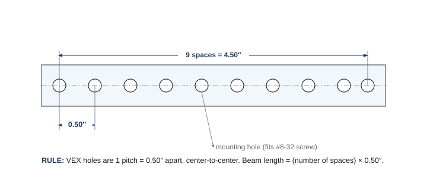

From worksheets to a real problem
Until now, every build had an answer key. This one doesn't. A windmill captures rotary motion — historically from the wind, to grind grain or pump water — and turns it into useful work. Your job: build a geared windmill that lifts a small load, turning the rotor's spin into a steady pull on a string. There are many right answers, and your team will find yours the way engineers do — by running a process, making choices on purpose, testing, and improving. The mechanism you mastered in Chapters 3 and 4 is the heart of it: the windmill has to change the direction of motion 90° and gear for the torque to lift.
The engineering design process
Engineers don't start by building. They follow a process — a loop you'll use on every project this year. It keeps you from falling in love with your first idea and gives you a way forward when something fails (and something always fails the first time — that's normal, not a mistake).
Here's what each step means for the windmill:
- Define the problem. Read the design brief (below). Restate, in your own words, exactly what the windmill must do and the limits it must obey.
- Brainstorm. As a team, generate at least three different concepts and sketch each one. No idea is rejected yet — quantity first.
- Select. Compare your concepts with a decision matrix and pick one on purpose, not by gut feeling.
- Build. Construct your chosen design from EXP parts. Make it rigid — a wobbly frame lets gears slip.
- Test. Try to lift the load. Measure: did it lift? How fast? Did it stall?
- Improve, then loop. Change the gearing or stiffen the structure, and test again. Repeat until it works reliably.
The design brief
Engineers rarely choose their own problems — a client hands them a design brief: a short document stating what's needed and the rules of the job. Yours has five parts, and filling it in is the first thing you'll do:
📋 Windmill design brief
- Client: your teacher (standing in for someone who needs a load lifted).
- Problem statement: a load needs to be raised, and only rotary motion is available to do it.
- Design statement: design and build a geared windmill that converts rotary input into a lifting motion and raises the standard load.
- Constraints: build only from the EXP kit; the whole build fits one storage cubby (≈33 × 33 × 39 cm); it must change the direction of motion 90°; it must be stable and rigid.
- Deliverables: a working windmill, a completed decision matrix, and a documented engineering notebook.
Choosing on purpose: the decision matrix
Once you have three sketches, how do you choose? Not by "I like this one." Engineers use a decision matrix: list the things that matter (the criteria), give each a weight for how important it is, then score each concept against each criterion. The math removes the guesswork.
Here's a worked example. Three windmill concepts, scored 1 (poor) to 5 (great). Each score is multiplied by the criterion's weight, and the weighted scores are added:
| Criterion | Weight | Concept A (spur, 1:1) | Concept B (spur, geared down) | Concept C (bevel + geared down) |
|---|---|---|---|---|
| Lifting power (torque) | 5 | 2 → 10 | 4 → 20 | 5 → 25 |
| Turns the corner 90° | 5 | 1 → 5 | 1 → 5 | 5 → 25 |
| Stable & rigid | 3 | 4 → 12 | 3 → 9 | 4 → 12 |
| Easy to build | 2 | 5 → 10 | 4 → 8 | 3 → 6 |
| Fits the cubby | 2 | 5 → 10 | 4 → 8 | 4 → 8 |
| Total | 47 | 50 | 76 |
Concept C wins — and notice why: the two things that matter most (lifting power and turning the corner) are weighted 5, and only the bevel-gear design does both. The matrix didn't just pick a winner; it showed which features were worth the trouble. Your criteria and weights may differ — that's the point. Decide what matters, then let the numbers guide you.
🧭 How to build a decision matrix
1. List 4–6 criteria — the things a good solution must have (include your hard constraints, like "turns 90°" and "fits the cubby").
2. Weight each 1–5 by importance. The must-haves get the big weights.
3. Score each concept 1–5 on each criterion. Be honest, not hopeful.
4. Multiply score × weight, add up each column, and the highest total is your starting design. (You can still change your mind — but now you know the trade-offs.)
The windmill's engineering: turn the corner, gear for lift
This is where Unit 2 pays off. Two mechanical decisions make or break your windmill:
Turning the corner — the bevel gear. Your windmill's rotor spins on one axis, but the drum that winds the lifting string may need to spin on an axis 90° away. A bevel gear pair does exactly this — it transfers rotation "around the corner," changing the axis of motion by 90° (you met it in Chapter 4). This is the windmill's signature mechanism: rotary motion in one plane becomes rotary motion in another. The catch is keeping the two bevel gears meshed at the right angle and spacing — if they drift apart or sit crooked, the teeth skip under load. That's what a gearbox bracket is for: it holds a bevel pair at the correct spacing and angle so the mesh stays solid, which is exactly the "hold the gears in proper relationship" part of your design brief.
Gearing for lift — the gear ratio. Lifting a load takes torque. If your windmill spins freely with nothing attached but stalls the moment it has to lift, the answer isn't more force — it's a gear reduction (Chapter 3): gear down so the drum turns slower but pulls harder. The trade is speed, and for lifting, slower-but-stronger is exactly what you want.
The original engineering challenge asks you to prove you understand the trade by building three versions of the gearing — a great test of everything in Unit 2:
⚙️ Three gearings to model
- A — equal: output speed and torque equal the input (a 1:1 gearing). What mechanism gives you this?
- B — geared down: output speed less than input, but output torque greater (the lifting setup).
- C — geared up: output speed greater than input, but output torque less.
The engineering notebook
Engineers are only as good as their records. Your engineering notebook is where the whole project lives, and it's a graded deliverable. Document as you go — not at the end from memory:
- The restated problem and constraints (in your own words).
- Your three concept sketches, with the input and output labeled.
- Your completed decision matrix and the choice it pointed to.
- Your gear ratio choice and why (which scenario, what you expected).
- Test results — did it lift? how fast? what failed? — and every change you made in response.
A good notebook lets someone else rebuild your windmill and understand every decision. That's the standard.
📐 See it in CAD — and try it yourself
A rigid frame starts with knowing your parts' real dimensions. Here's a VEX beam drawn the engineering way, with the one number that runs the whole metal system: holes are 0.50″ apart, center-to-center (one "pitch"). Count the spaces and you know the length — which is exactly how you check that your windmill fits the cubby.

This course uses Onshape (free for schools) for 3D CAD and drawings. You've been seeing CAD since Chapter 3 — now's a good time to make your own. Browse VEX parts in the VEX CAD library.
📐 Your build constraints
Same two rules as every build this year:
1 · Build from the EXP kit. Use the parts in your EXP bins — including the bevel gears from the Advanced Gear Kit. (Shared with V5, so they look the same; build from the EXP supply so the competition team's kits stay complete.)
2 · It has to fit the cubby. The whole windmill must fit one storage cubby, about 33 × 33 × 39 cm (13 × 13 × 15 in). Sketch with that envelope in mind — a tall windmill is impressive until it won't store. Break it down at the end of the project.
⚠️ Safety
- Keep fingers, hair, and loose clothing clear of meshing gears and the spinning rotor — gear teeth pinch.
- The lifted load can swing or drop. Keep it light, lift it over the table (not over hands or laps), and stand clear of the drop zone.
- If you power the rotor with a motor, keep the gear train clear before it spins, and stop it before adjusting anything.
📚 Learn more — VEX Library
- Building with VEX EXP — structure, shafts, bearings, and keeping a build rigid.
- Using Gear Ratios with the V5 Motor — building simple and compound gear trains and choosing a reduction. Heads-up: V5/competition page (12T/84T gears); build the same ideas with your 24/36/48/60T EXP gears.
- VEX Gears overview — how bevel gears "transfer motion around corners" to change the axis of motion 90°.
- Advanced Gearbox Brackets — the brackets that hold a bevel pair (or rack, worm, or differential) in proper mesh, so your 90° corner stays rigid under load.
What you'll need
- VEX EXP kit, including bevel gears (Advanced Gear Kit) and spur gears (24/36/48/60T)
- Shafts, bearing flats, shaft collars, C-channels/plates for a rigid frame
- String and a small drum/spool, plus the standard load your teacher provides
- Design brief and decision-matrix templates; engineering notebook
- Optional: an EXP Smart Motor or a hand crank to drive the rotor; a fan for true "wind"
Do it
- Define. Read the design brief and restate the problem and constraints in your notebook.
- Brainstorm. Sketch at least three windmill concepts. Label the input (rotor) and output (lifting drum) on each, and note how each one turns the corner 90° and where its gearing goes.
- Select. Build a decision matrix (criteria, weights, scores), total the columns, and choose your design. Record it.
- Build. Construct your windmill from EXP parts. Keep the frame rigid so the gears stay meshed, and confirm it fits the cubby.
- Model the three gearings. Set up scenario A (1:1), then B (geared down for torque), then C (geared up for speed). Name the mechanism in each and record what happens to the lift.
- Test & improve. Try to lift the load. If it stalls, gear down further or stiffen the structure; if it lifts but you want speed, adjust the other way. Loop until it lifts reliably, recording each change.
- Gallery walk. Compare your windmill with other teams', and give and collect peer feedback in your notebook.
Check your understanding
- How did your gear ratio choice affect the windmill's ability to lift the load?
- What would you change if you built it again, and why?
- Which mechanisms from Unit 2 can increase torque and decrease speed? (List all that apply.)
- Which mechanisms can transmit rotary motion at a 90° angle?
- What is the purpose of an idler gear — and did your windmill use one?
- How did the decision matrix change (or confirm) the design you would have picked by gut feeling?
Key terms
Sources (VEX Library, kb.vex.com / vexrobotics.com): Building with VEX EXP; Using Gear Ratios with the V5 Motor; VEX Gears overview (bevel gears change the axis of motion 90°); Advanced Gearbox Brackets (holding a bevel pair in mesh). Engineering design process, design brief, and decision-matrix structure adapted from the PLTW Gateway Automation & Robotics curriculum. Bevel gears are included in the PLTW Gateway VEX EXP kit's Advanced Gear Kit.